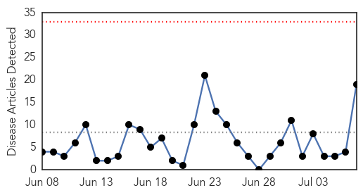
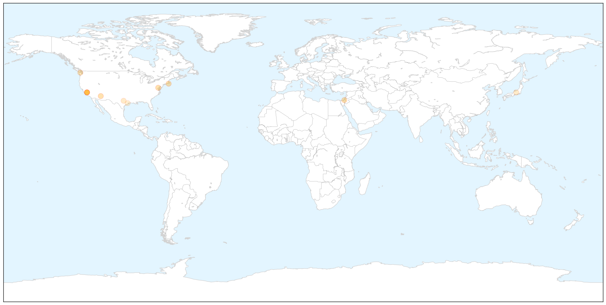

Cholera
30-Day Web Trend
0 alerts, 0 warnings

30-Day Twitter Trend
2 alerts, 0 warnings

Article Locations


Article Confidences

Top Articles:
- 1.000
- Cholera kills 32 in South Sudan
- 1.000
- The most from the coast
- 0.998
- Ministry of Health, WHO and partners score some victories in responding to cholera outbreak in South Sudan - South Sudan
- 0.994
- Cholera kills 32 in South Sudan, education key to stemming outbreak: UN
- 0.992
- 08.07.98 Cafes close over cholera fears
- 0.992
- Prestea Records 13 Cholera Cases, One Dead
- 0.992
- 8 die of cholera in northern Nigeria: official
- 0.992
- 8 die of cholera in northern Nigeria: official - Xinhua
- 0.988
- South Sudan cholera outbreak: 20 percent of deaths are in young children
- 0.987
- Cholera kills 32 in South Sudan, says UN
- 0.986
- 20 pct cholera deaths in South Sudan seen in children under five: UNICEF - Xinhua
- 0.983
- The most from the coast
- 0.941
- Cholera has killed 32 people in South Sudan
- 0.925
- Health centers not ready to battle cholera outbreak
- 0.875
- Children Make Up One Fifth Of Cholera Deaths In South Sudan: UNICEF
- 0.840
- S. Sudan Fighting Displaces Over 2 Million
- 0.550
- South Sudan UN Mission deplores killing of civilian in Organization compound
- 0.543
- Why Can’t We Stop Cholera In Haiti? « Berman Institute Bioethics Bulletin
- 0.533
- South Sudan: UN Mission deplores killing of civilian in Organization compound
Top Tweets:
-
No tweets found for Jul 07, 2015
Measles
30-Day Web Trend
2 alerts, 2 warnings

30-Day Twitter Trend
0 alerts, 0 warnings

Article Locations

X

Article Confidences

Top Articles:
- 0.954
- Wash. reports first US measles death in 12 years
- 0.944
- ZERO U.S. Measles Deaths in 10 Years, but Over 100 Measles Vaccine Deaths Reported
- 0.943
- Martha's Vineyard Measles Case Was Misidentified; Hospital to Review Protocols
- 0.931
- Measles Death Points to Need for Herd Immunity
- 0.866
- Here's Why : Discovery News
- 0.846
- First Death From Measles In U.S. In 12 Years
- 0.822
- American woman who died of measles was previously vaccinated against measles… total failure of vaccine covered up by quack vaccine propagandists
- 0.816
- Measles death July 2015: Woman dies of measles in Washington
- 0.751
- Why You Cannot Trust the Mainstream Media for Accurate Vaccine News
- 0.644
- Steven Abrams: Pediatricians are right to protect patients against the unvaccinated
- 0.640
- Autism in the absence of MMR vaccine
- 0.550
- Almost all doctors admit they work sick, study shows
Top Tweets:
-
No tweets found for Jul 07, 2015